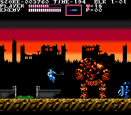
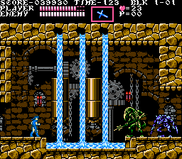
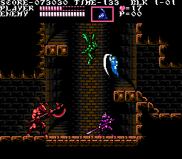
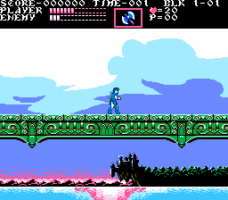

This is the first game project I ever worked on.
It started as the project for my end-of-highschool exam, since
I was lucky enough to be in a school where, in my last year of
highschool,
I was given the option to select an (experimental) programming
class.
I started working on the project in the middle of the school year
(long before the exam)
because it was of personal interest to me, I always wanted to make
games.
It was more of a hobby to me, especially since I did everything by
myself:
- the graphics (I had been using mspaint from a young
age)
- the music (I learned how to use Famitracker to create
NES-accurate chiptunes)
- the coding (programmed in Python - which was taught in
the class - using the Pygame library)
I chose to “demake” a game I am fond of, which I think is quite
underrated: Castlevania - Rondo of Blood.
This game is not very well-known because it was released on a console
that few people own (or even know),
the PC-Engine - also known as the Turbografx16 in
North America -
and also, this game was only ever released in Japan.
Although, the Castlevania series is a well-known franchise, and
there was a game that
loosely resembled this one, that was released in the west:
Castlevania - Dracula X.
Unfortunately Castlevania - Dracula X is very different from
Castlevania - Rondo of Blood,
and most people who have played both generally agree that it is by far
the lesser of the two games.
The idea was to “demake” the game (i.e. to remake it under
lower specs),
in other words, to re-imagine the game, as if it had been released
a few years earlier, on the NES (Nintendo Entertainment System).
During the lifespan of the NES console, Castlevania was one of
the truly big names,
alongside classics like Super Mario, Legend of Zelda,
Metroid, Mega Man, etc.
This would have perhaps allowed the game to enjoy greater accessibility,
and so, greater success.
Demaking the game implies that I had to comply with the technical
limitations of this console.
The NES is not a very powerful system, it has many limitations, in terms
of power, video, audio, etc.
Here are some mockups I made at the very start, to have an idea of what it might look like:



Originally, for the high school exam, I just implemented the battle
against the first boss
(or, to be more precise, one of the two “first bosses”, since this game
features branching paths).
I figured that this “lake serpent” enemy would be easier to implement,
since it required little
pixelart sprite work, just a couple of small distinct parts of its body
- and in fact,
making the body parts follow the head of the snake was a fun programming
challenge in and of itself.

Of course, this first game engine I had built had several bugs
(including some that made the boss trivial),
the player character was clunky to control, and many other issues
regarding Python made me abandon it.
Several years later, after working on several game projects here and
there, and after learning several
other programming languages, I decided to restart, and hopefully finish
this project.
I had two options as to how to develop the game, either: make a
custom engine that can imitate the NES well,
or develop an actual NES ROM in 6502 assembly. Needless to say, being
experienced with C at this point,
and having built a complex fully-featured ROM-hacking tool, Emblem Magic,
I had had my fair share of assembly languages, and so I chose the first
option.
What made sense was to create this custom engine in C, using SDL2 - this might sound weird, but
it will make more sense if you know how I view the C language, which I
talk about more here.
I made progress, and as I did so, so too did the scope of the project
increase.
I not only wanted to pay tribute to Castlevania - Rondo of
Blood, but also to another favorite of mine,
and the favorite of most players out there: Castlevania - Symphony
of the Night.
Now, Symphony of the Night is quite a different game from
Rondo of Blood,
it is not a tough, linear, level-by-level platformer like the original
Castlevania games.
Its “metroidvania” nature makes it much easier to
sidestep or avoid challenging sections,
whereas in Rondo of Blood, there is no easy way out (unless you
play as Maria, that is…).
It seemed to me like there was definitely some just middle of difficulty
and design between the two,
a game where the RPG stat mechanics can help a struggling stuck player
(either through simple grinding,
or some other strategy), but where there is still sufficient challenge
for the player… dare I say, a souls-like ?
It also made a great deal of sense to me to mesh the two games
together, simply because in terms of lore,
Symphony of the Night is a direct sequel to Rondo of
Blood, occuring just a couple of years later,
and featuring many of the same characters. Furthermore, the maps of the
two games have perfect overlap in many areas.